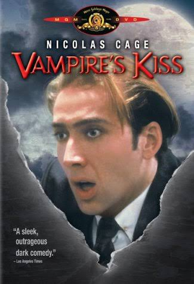

Terminator 2: Judgment Day (1991)

Synopsis
A cyborg, identical to the one who failed to kill Sarah Connor, must now protect her ten-year-old son John from a more advanced and powerful cyborg.
⭐ Film Highlights & Notes
- Full feature presentation restored for high-quality playback.
- Available to stream on MovieHub Vault.
Enjoying MovieHub? Grab Dennis a coffee to support server costs and keep the vault free for everyone!
☕ Buy Me a CoffeeYou Might Also Like
Battle of the Commandos (1969) Full Movie | Jack Palance & Curd Jürgens | Classic WWII Action

Death Watch (1980) Full Movie | Romy Schneider, Harvey Keitel, Harry Dean Stanton | Sci-Fi Thriller, Dystopian Drama | Bertrand Tavernier | BluRay 1080p

Red Sun (1971) Full Movie | Charles Bronson & Toshiro Mifune | Samurai Western

Vampire's Kiss (1988) Full Movie | Nicolas Cage & Maria Conchita Alonso | Cult Classic Horror Comedy

The Invisible Man (1933) Full Movie | Claude Rains | Classic Universal Horror
Hancock